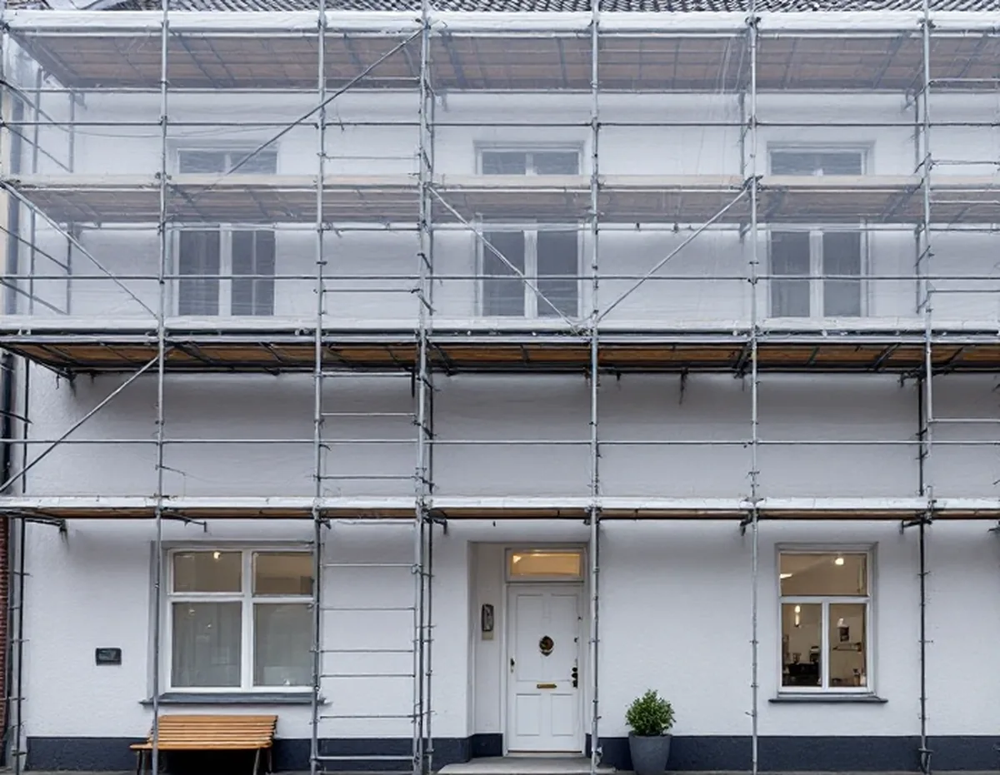
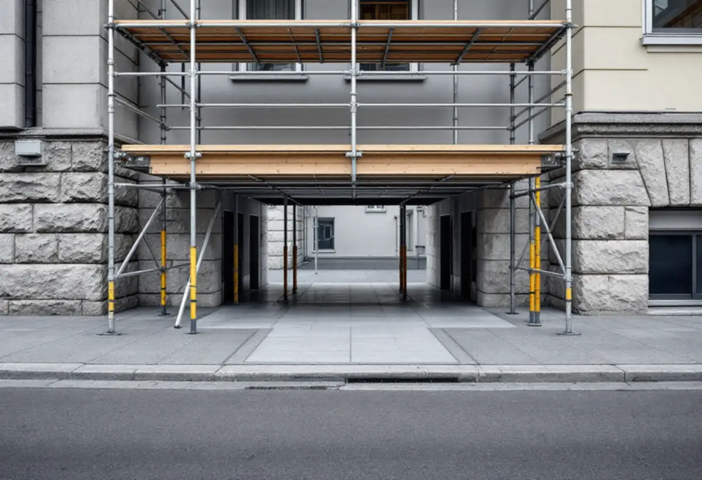
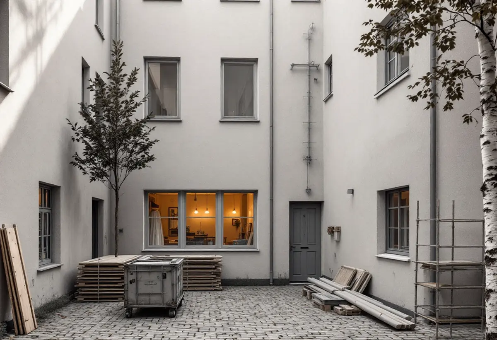

Platsbesök
Vi går igenom gatufasaden och gårdsfasaden och mäter trottoarens bredd utanför huset.
I Vasastan står husen i gatuliv, så ställningen till en gatufasad hamnar på trottoaren. Det kräver tillstånd innan första röret kommer på plats. Geal Entreprenad AB renoverar fasader i Vasastan åt bostadsrättsföreningar och fastighetsägare och planerar etableringen på gatan lika noga som själva putsarbetet.

Översiktsplanen räknar Norrmalm till den klassiska stenstaden från 1870–1930 och beskriver en småskalig fastighetsindelning med sammanbyggda fasader i gatuliv och kringbyggda gårdar. I norra Vasastaden pekar planen ut kvarteren Motorn och Vingen, som uppfördes i slutet av 1910-talet som ett tidigt exempel på kooperativt byggande med kommunalt stöd. I sådana kvarter står gatufasaden direkt mot trottoaren, utan förgård att ställa upp ställningen på, och planen anger 18 meter som stenstadens typiska gatubredd – en bredd som ska delas mellan körbana, trottoar, gående och ställning.
Det är också lägenheter som dominerar. Enligt stadens områdesfakta 2025 har Västra Matteus 12 579 bostäder, varav 8 990 bostadsrätter, och Östra Matteus 7 680 bostäder, varav 5 593 bostadsrätter. Ingen av stadsdelarna har en enda bostad i småhus. Fasadrenoveringen blir med andra ord ett projekt för föreningen eller fastighetsägaren, där styrelsen eller ägaren beslutar och betalar.

Stockholms stad skriver att den som behöver använda offentlig plats för byggverksamhet ska söka polistillstånd. Tillståndet måste vara utfärdat innan platsen tas i bruk och ska omfatta allt som ställs dit under hela tiden. Det gäller bland annat byggställningar, containrar, arbetsbodar, mobilkranar, byggsäckar, byggskyltar och tillfartsområdet till etableringen. Behövs en upplagsplats för ställningsmaterial när ställningen monteras upp och ner, ska även den ingå i tillståndet.
Stadens villkor för en tillgänglighetsanpassad byggställning innebär bland annat att minst 1,6 meter ska vara fritt under ställningen eller att minst 2 meter finns kvar för gående på gångbanan. Polisen tar en administrationsavgift för varje ansökan, och staden tar ut en avgift för att platsen används, beroende på vilken avgiftszon gatan ligger i. Byggskylten får vara högst 15 kvadratmeter per projekt. Själva bygglovet är en separat fråga: enligt staden kan det behövas bygglov för byggbodar, container, byggplank, upplag och skyltar, medan ett glest byggstängsel inte kräver lov.
Avgiften för en byggetablering räknas per kvadratmeter och år. Vid en kortare etablering betalas den som en engångskostnad när polistillståndet har kommit, vid en längre faktureras den varje kvartal. Sedan den 1 maj 2021 går det enligt staden inte längre att få reducerad upplåtelseavgift för en byggetablering. Hur länge ställningen står på gatan påverkar alltså föreningens kostnad, och därför lägger vi upp arbetsordningen så att gatusidan blir klar så fort det går.
Staden råder att byggetableringen placeras i anslutning till arbetsplatsen och på egen fastighet om det går. Mot gården kan ställningen ofta stå på föreningens egen fastighet, men ligger etableringen på någon annans mark behövs enligt staden fastighetsägarens tillstånd. Vi lägger därför gärna upp arbetet så att material, container och bod ryms på gården, medan gatusidan bara får den ställning som krävs för just den fasaden. Ändras fasaden mot gatan – till exempel med ny kulör eller nytt material – krävs dessutom bygglov för ett flerbostadshus, eftersom den vetter mot allmän plats.
Bostadsrättslagen säger att föreningen ska hålla huset i gott skick, i den mån ansvaret inte ligger på bostadsrättshavaren. Lagen kräver också att den ekonomiska plan som upprättas innan en förening upplåter lägenheter innehåller en teknisk underhållsplan för fastighetens behov de kommande 50 åren. Finns fasaden med i en sådan plan kan tillståndsfrågan på gatan förberedas i god tid. Om målning inne i lägenheten, se målare i Vasastan.

Vi går igenom gatufasaden och gårdsfasaden och mäter trottoarens bredd utanför huset.
Ställning, upplag, container och bod placeras på ritning – så mycket som möjligt på gården.
Ställning, lagning, avfärgning och plåt redovisas var för sig.
Polistillstånd för gatusidan och eventuellt bygglov för bod eller container söks innan arbetet startar.
Puts lagas och avfärgas, och plåt på lister och fönsterbleck ses över.
Ställningen monteras ner och gatan lämnas tillbaka i det skick tillståndet kräver.
I Västra och Östra Matteus finns inga småhus, så där är det en förening eller fastighetsägare som beställer fasadarbetet. Skatteverket räknar fasader till de gemensamma ytorna i en bostadsrättsförening, och arbete där ger inget rotavdrag. Det gäller också att montera upp eller ned en byggnadsställning på utsidan av bostaden.
Rotavdraget gäller bara arbetskostnaden för arbete i eller i nära anslutning till en bostad som du själv äger och bor i. Kostnader för material, resor, utrustning eller administration ger enligt Skatteverket inget avdrag.
Fasadens höjd och längd mot gatan, hur länge ställningen behöver stå, om etableringen ryms på gården, hur stor del av putsen som ska lagas och hur mycket plåt som byts styr kostnaden. Efter ett gratis platsbesök får styrelsen ett skriftligt kostnadsförslag där ställning och etablering står för sig.
Puts, panel och tilläggsisolering.
Fasadrenovering i Stockholm →Flytta badrummet, ny stam och frånluft.
Badrumsrenovering i Vasastan →När en lokal blir bostad.
Byggföretag i Vasastan →Storgårdskvarteren och 20-talets fönster.
Fönsterbyte i Vasastan →Fönster i Birkastadens jugendhus.
Fönsterrenovering i Vasastan →Springor, kupning och underhåll.
Golvläggare i Vasastan →Kokvrån som blir kök.
Köksrenovering i Vasastan →Snickerier, fönster och sprucket spackel.
Målare i Vasastan →Ny tapet på gamla putsväggar.
Tapetsering i Vasastan →Hela lägenheten, med husets värden kvar.
Totalrenovering i Vasastan →